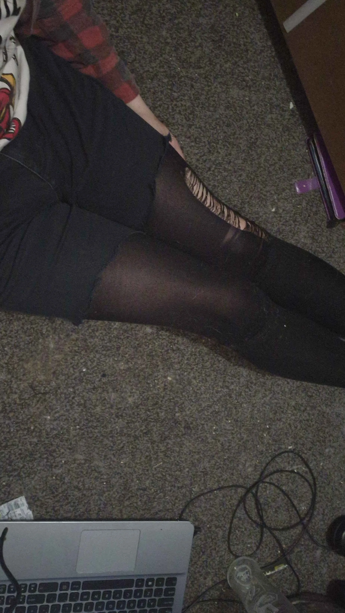

I like many things. My music is metal and rock, and also techno-punk. I love art, and this is a picture of a character, Romana Flowers, from Scott Pilgrim vs. The World. I design a lot of characters, and I make Darth Vader a lot. Im also into gaming and coding, testing out code in games. I am working on a video game, but it's taking time. I love testing out things and working on many projects. I am also doing college, and Im really passionate about the designs I create. I try so hard to make them look good. Im also into YouTube; its another passion of mine.
Another thing is I like Star Wars. Theres something about Darth Vader that is dark and cool; I love how he looks. I draw him a lot and make thumbnails for YouTube featuring him. I love to create funny scenes for the characters Ive made. I also create art of my friends. I love making character art, my own art, and working in my field. I feel really good at pixel art.